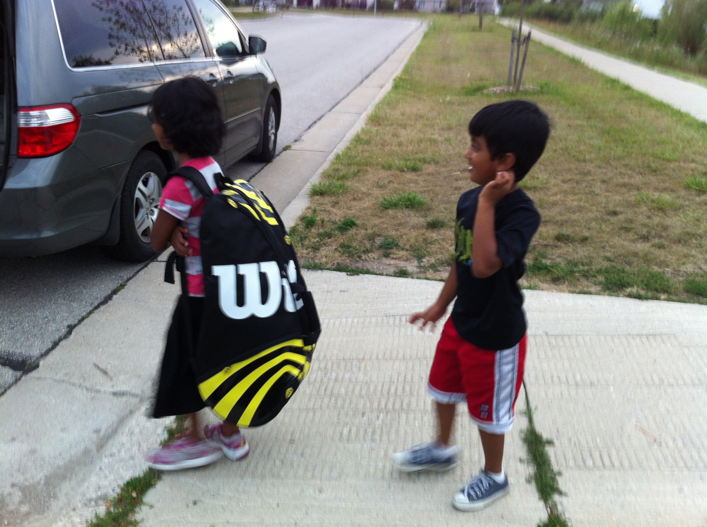
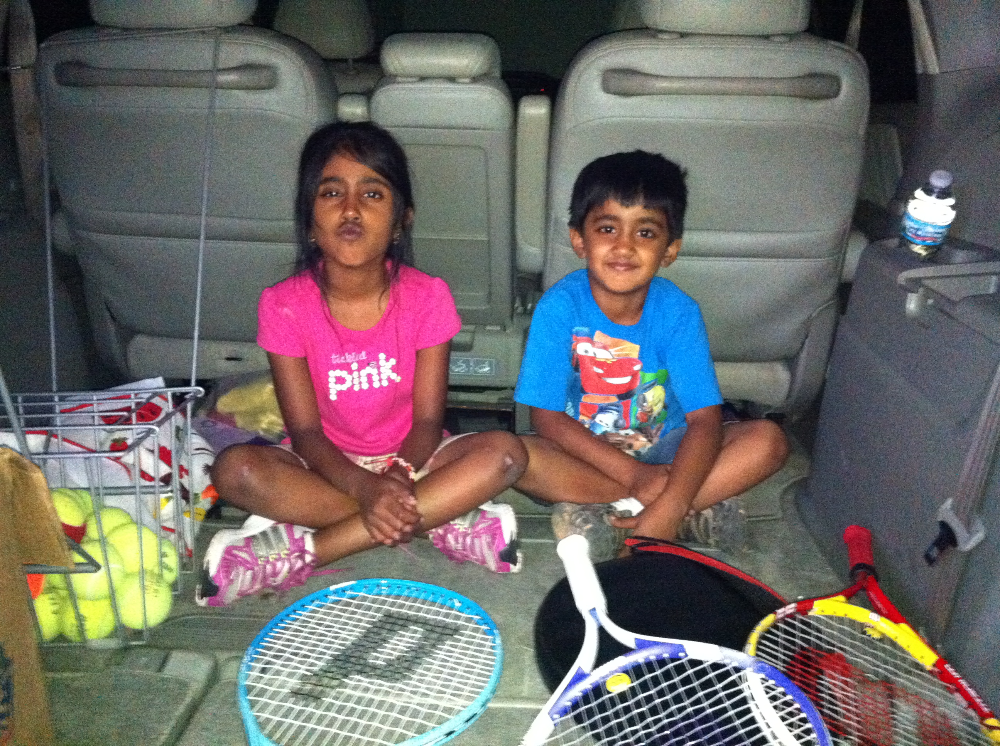
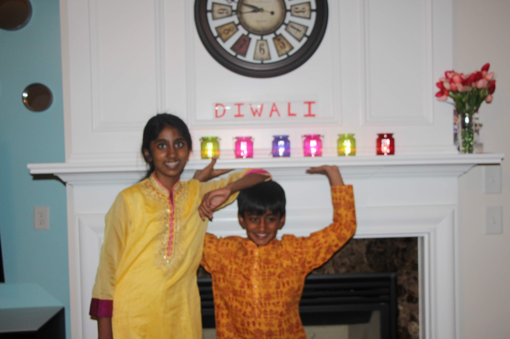
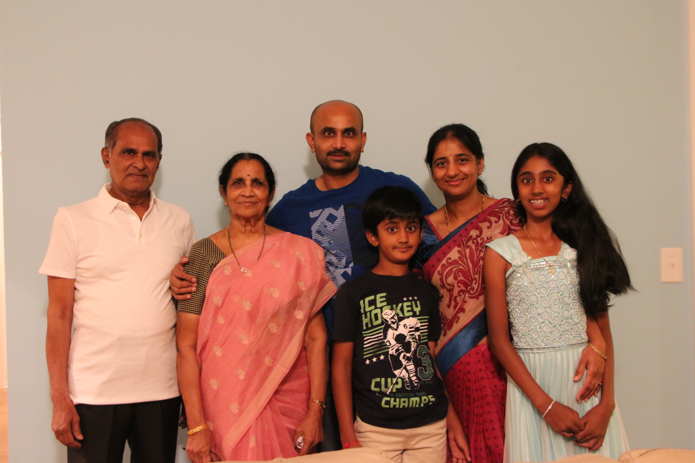
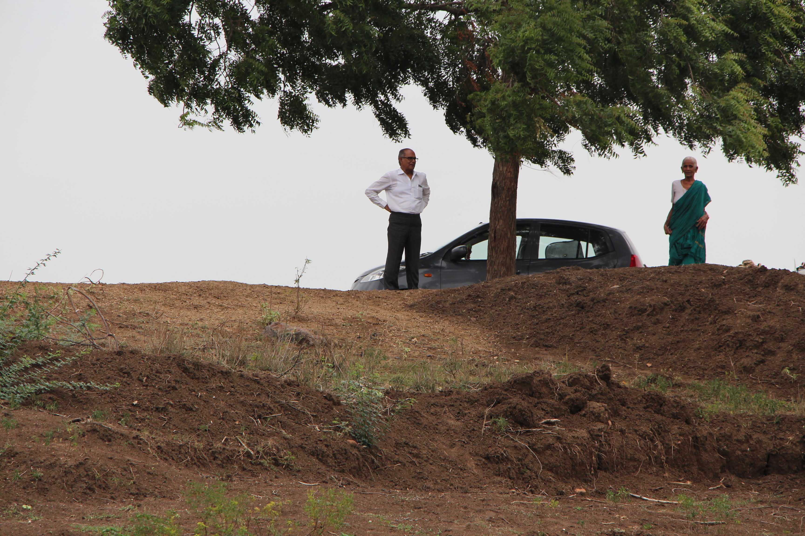
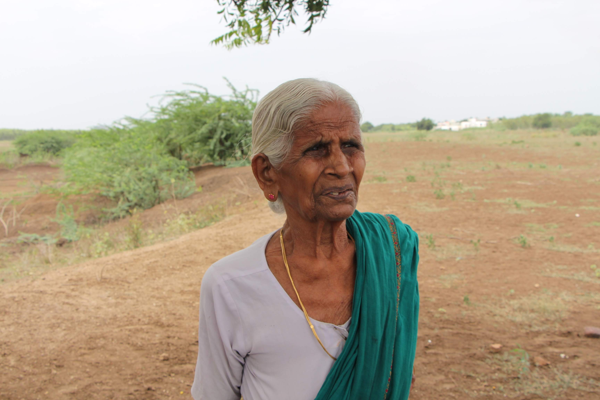

Originally written by 5th grade me —
still stands true a decade later.
↓ scroll to discover the shades of blue that paint my life's canvas
Blue is my first tennis racket.
It's where I discovered the thrill of slicing backhands and sweating through state tournaments
with my brother under the watchful eyes of our Dr. Pepper-loving coach.
Blue is the sparkling shade of Cabbage Beach.
A miracle when my family accidentally stumbled into a Windows-wallpaper-looking paradise on a wildly underplanned cruise.
We played volleyball, buried each other in sand, and took millions of pictures.
Blue is the living room walls of our family home.
Still bare — but brimming
with invisible murals of late-night Pictionary matches, fort-building escapades, and cozy movie marathons under my mom's shared blanket.
These walls hold our laughter, our dreams, and the countless moments that make a house a home.
Blue is the deep aqua sari my thathamma wore as she worked the fields in India.
Her strength is a reminder of where I come from and how far her legacy stretches.
Everyone says that I look like her.
Chapter V · Who I Am
I am a journalist — someone who believes the most ethical thing you can do is bear witness and report it truthfully.
I am a filmmaker — because some truths need to be felt, not just read.
I am a software engineer — building the tools that let stories reach the people who need them most.
Blue is Carolina Blue — my new world as a third-year at UNC Chapel Hill.
New faces, new stories, new experiences — and the constant excitement of writing the next chapter.
Blue is more than my favorite color.
It's my timeline, my family, my culture,
my adventures, and my dreams
rolled into one.